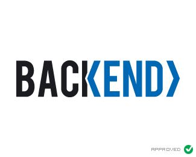

Cloud computing
cloud computing
TUGAS BESAR
KELOMPOK 7
- LINK GITHUB: Link Github Kelompok 7
- Telepon: +62 821-7546-2116
Struskturasi WEB
FRONT END
Frontend adalah bagian dari aplikasi atau situs web yang berinteraksi langsung dengan pengguna. Ini mencakup semua elemen visual dan antarmuka pengguna, seperti tata letak, desain, dan elemen interaktif. Teknologi frontend biasanya melibatkan HTML, CSS

BACKEND
Backend adalah bagian dari aplikasi atau sistem yang tidak terlihat oleh pengguna, berfungsi untuk mengelola dan memproses data. Ini mencakup server, database, dan logika aplikasi yang beroperasi di belakang layar.

DATA BASE
Database adalah sistem yang menyimpan dan mengelola data secara terstruktur, memungkinkan pengguna untuk mengakses, mencari, dan memanipulasi data dengan efisien.Pada Web ini kita menggunakan FIREBASE